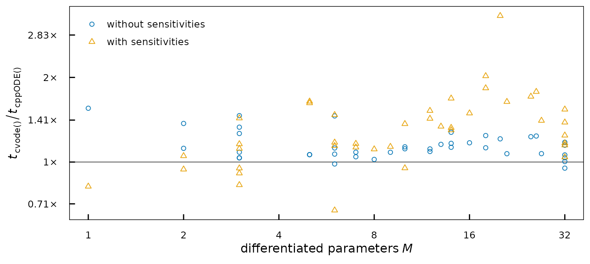
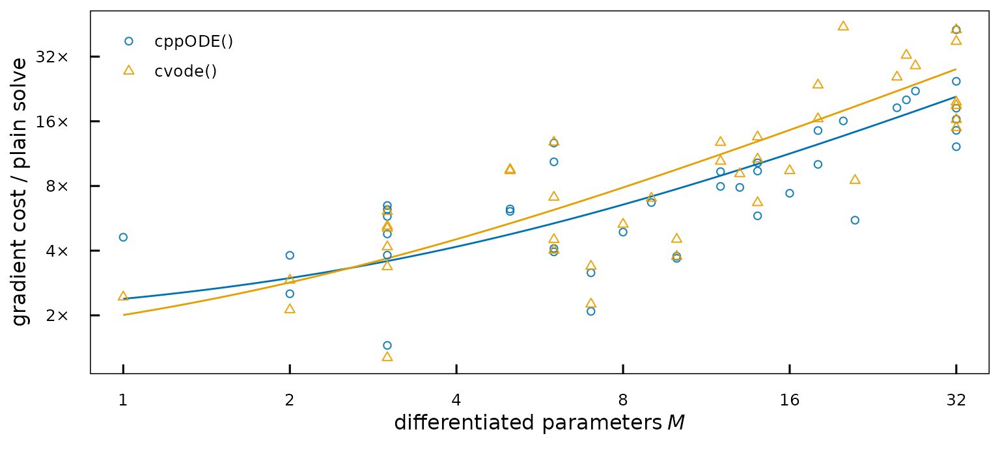
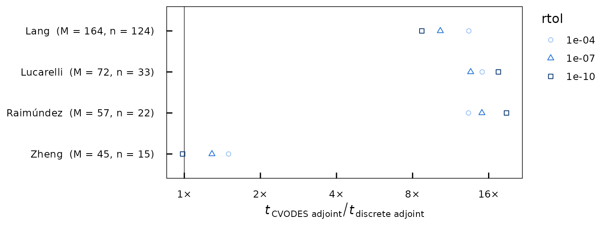
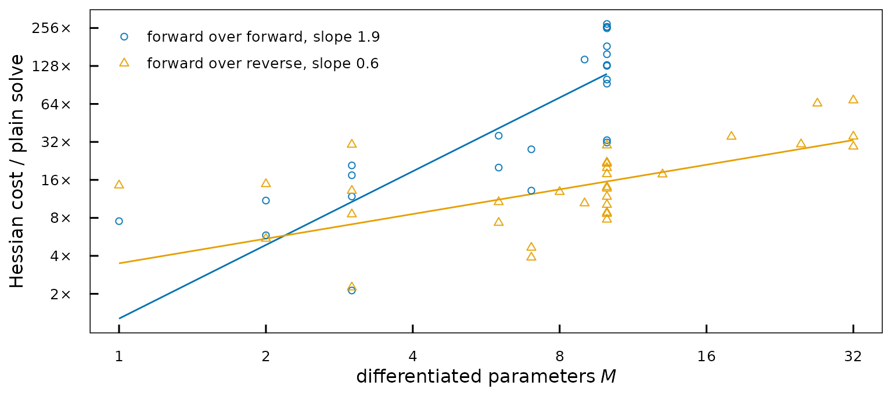
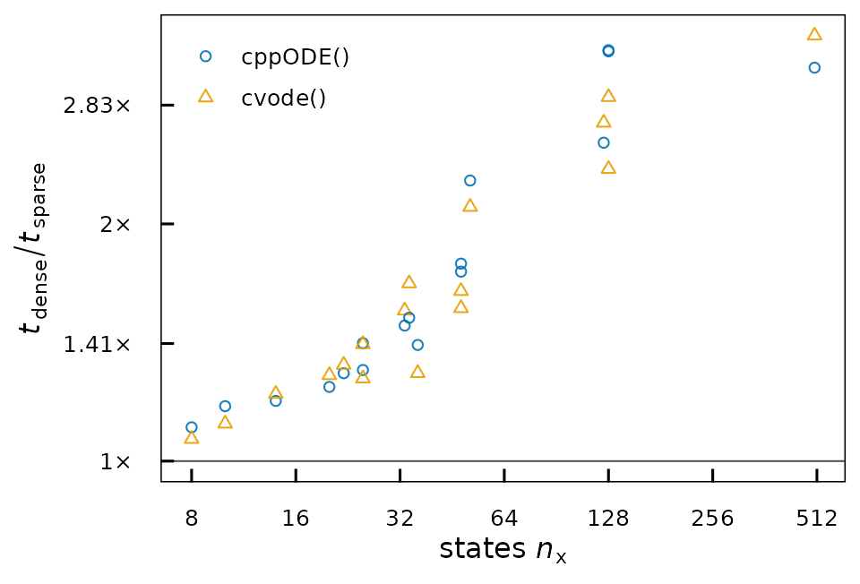
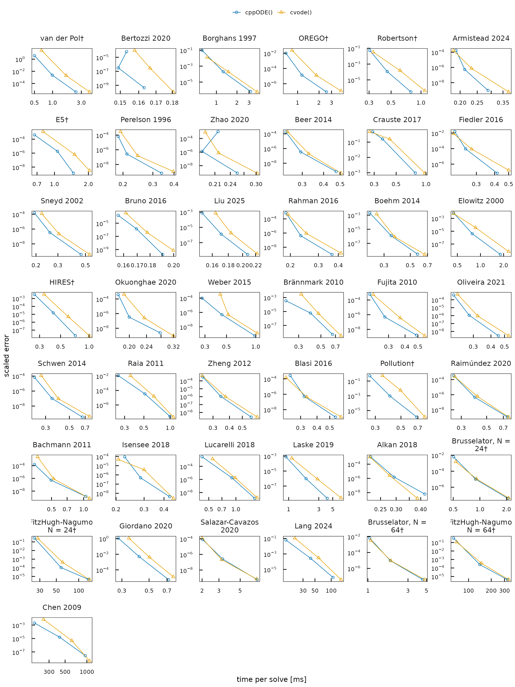

The integrators of cppODE() and cvode()
(SUNDIALS CVODES) on \(43\) problems.
Both take right-hand side, Jacobian, events and linear solver from one
expression graph; only the numerical cores differ. Results come from one
saved run in vignettes/articles/bench/; the suite is in benchmarks/.
Benchmark setup
- Problems: \(33\) models of the PEtab benchmark collection [1], [2] and \(10\) classical test problems, \(n_x = 2\) to \(504\).
-
Derivatives: forward sensitivities in up to \(M = 32\) parameters, reverse on Lang and
Chen (\(M \ge 120\));
cppODE()by forward automatic differentiation,cvode()by the CVODES sensitivity equations. - Solver: BDF/NDF, automatic linear solver, at \((\mathrm{rtol}, \mathrm{atol}) \in \{(10^{-4}, 10^{-6}), (10^{-7}, 10^{-9}), (10^{-10}, 10^{-12})\}\); shared output grid and initial values; no R calls during the solve.
- Timing: median of five batches of at least \(0.25\) s, both backends of a cell in one worker, AMD EPYC 7513 nodes with twelve workers; ratios are geometric means over the tolerances.
- PEtab import: from SBML; a switch in time inside the simulated window becomes a time-triggered event with an undifferentiated switching time. Differentiated are the estimated parameters entering the ODE, initial values only if estimated. Trajectories start from the SBML initial values, without pre-equilibration.
| problem | \(n_x\) | \(M\) | problem | \(n_x\) | \(M\) | problem | \(n_x\) | \(M\) |
|---|---|---|---|---|---|---|---|---|
| van der Pol† | 2 | 1 | Rahman 2016 | 7 | 9 | Bachmann 2011 | 25 | 27 |
| Bertozzi 2020 | 3 | 3 | Boehm 2014 | 8 | 6 | Isensee 2018 | 25 | 32 |
| Borghans 1997 | 3 | 20 | Elowitz 2000 | 8 | 18 | Lucarelli 2018 | 33 | 32 |
| OREGO† | 3 | 3 | HIRES† | 8 | 2 | Laske 2019 | 34 | 6 |
| Robertson† | 3 | 3 | Okuonghae 2020 | 8 | 14 | Alkan 2018 | 36 | 32 |
| Armistead 2024 | 4 | 10 | Weber 2015 | 8 | 26 | Brusselator, N = 24† | 48 | 3 |
| E5† | 4 | 3 | Brännmark 2010 | 9 | 14 | FitzHugh-Nagumo, N = 24† | 48 | 5 |
| Perelson 1996 | 4 | 2 | Fujita 2010 | 9 | 16 | Giordano 2020 | 51 | 32 |
| Zhao 2020 | 4 | 21 | Oliveira 2021 | 10 | 10 | Salazar-Cavazos 2020 | 75 | 6 |
| Beer 2014 | 5 | 6 | Schwen 2014 | 11 | 13 | Lang 2024 | 124 | 164 |
| Crauste 2017 | 5 | 12 | Raia 2011 | 14 | 18 | Brusselator, N = 64† | 128 | 3 |
| Fiedler 2016 | 6 | 12 | Zheng 2012 | 15 | 32 | FitzHugh-Nagumo, N = 64† | 128 | 5 |
| Sneyd 2002 | 6 | 14 | Blasi 2016 | 16 | 8 | Chen 2009 | 504 | 152 |
| Bruno 2016 | 7 | 7 | Pollution† | 20 | 25 | |||
| Liu 2025 | 7 | 7 | Raimúndez 2020 | 22 | 32 |
Comparison with CVODES

Head-to-head ratio of the two backends, one marker per problem and mode;
above the line cppODE() is faster. The plain solve is
placed at the \(M\) of the matching
sensitivity run.
-
Plain solves:
cppODE()is faster on \(41\) of \(43\) problems, by a geometric mean of \(1.15\) (step ratio \(1.02\), right-hand-side evaluations \(1.06\)). The model functions are inlined into the stepper; CVODE calls them through function pointers and dispatches vector operations through theN_Vectortable. -
Forward sensitivities:
cppODE()is faster on \(34\) of \(41\) problems, by \(1.29\): \(1.01\) for \(M \le 3\), \(1.22\) for \(4 \le M \le 12\), \(1.52\) for \(13 \le M \le 32\). CVODES evaluates one Jacobian-vector product per parameter,cppODE()one dual evaluation of \(f\) with all \(M\) tangents (about one eleventh of the right-hand-side evaluations). The dual cost per state component does not depend on \(M\); six of the seven slower problems have \(M \le 6\), the slowest is Salazar-Cavazos (\(n_x = 75\), \(M = 6\), \(0.67\)).
Gradient cost

Cost of one gradient by forward sensitivities in units of the plain solve of the same problem and backend, with least-squares lines.
In units of a plain solve, a forward-sensitivity gradient costs \(1.8 + 0.60\,M\) with cppODE()
and \(1.2 + 0.84\,M\) with CVODES
(\(92\) and \(129\) at \(M =
152\)). The discrete adjoint
costs \(6.3\) on Chen and \(3.6\) on Lang, independent of \(M\); the CVODES adjoint costs \(27\) on Lang, \(8.8\) to \(13.7\) times the discrete adjoint time.

Time of one gradient by the CVODES adjoint over the time by the discrete adjoint, per model and tolerance; right of the line the discrete adjoint is faster.
On the six models with \(M \ge 40\) (one core each), CVODES succeeds on four, with adjoint time ratios \(8.7\) to \(18.8\) on Lang, Lucarelli and Raimúndez and \(1.0\) to \(1.5\) on Zheng (\(n_x = 15\), about a millisecond per solve). The discrete adjoint reuses the forward steps; CVODES chooses new backward steps and recomputes the forward state between checkpoints. At \(\mathrm{rtol} = 10^{-10}\) both gradients deviate from the reference by \(10^{-10}\) to \(5 \cdot 10^{-7}\).
Second-order derivatives

Cost of one Hessian of the summed outputs in units of the plain solve. The lines are power laws fitted in log-log over \(M > 1\).
Hessian of the summed outputs, cppODE() only, \(n_x \le 30\): forward over reverse up to \(32\) directions, forward over forward up to
\(10\) states and \(10\) directions. Cost exponents are \(1.9\) (forward over forward) and \(0.6\) (forward over reverse); forward over
reverse breaks even at \(M = 3\) and is
\(3.0\) times faster at \(M = 6\), \(9\) to \(14\) at \(M = 9,
10\). At \(\mathrm{rtol} =
10^{-10}\) the median deviation from the forward-over-forward
reference Hessian is \(8.1 \cdot
10^{-10}\) (forward over forward) and \(1.8 \cdot 10^{-8}\) (forward over
reverse).
Sparse linear solver

Gain of the sparse over the dense linear solver, one marker per model and backend.
On seventeen models with the linear solver pinned, sparse gains \(1.09\) at \(n_x = 8\) to \(3.3\) at \(n_x = 504\) for both backends; the automatic selection chose sparse in every case.
Accuracy against a reference
Error: largest deviation of a state from a CVODE reference (\(\mathrm{atol} = 10^{-14}\), \(\mathrm{rtol} = 10^{-12}\)) over the
largest reference value of the state. The median error ratio
cppODE()/CVODE is \(0.99\)
without sensitivities (central \(90\,\%\): \(0.51\) to \(1.51\)) and \(1.09\) with (\(0.66\) to \(2.37\)). The CVODE reference favors
CVODE.

Work-precision of the plain solves, one panel per problem: scaled error against time per solve at the three tolerances; down and to the left is better.
Failed runs
Six of \(1083\) cells failed, all at
\(\mathrm{rtol} = 10^{-10}\): forward
sensitivities and forward over forward of cppODE() on
Oliveira (each linear solver) and on Weber.
Running the suite
The suite fetches the PEtab collection once and runs in three tiers of increasing coverage; a full run takes hours:
Rscript benchmarks/fetch-models.R
Rscript benchmarks/run-benchmarks.R --tier full --modes nosens,sens1,sens2A run writes results.csv, a README with configuration
and tables, and the figures to
benchmarks/results/<timestamp>/; options and cluster
runs are in the README of benchmarks/.